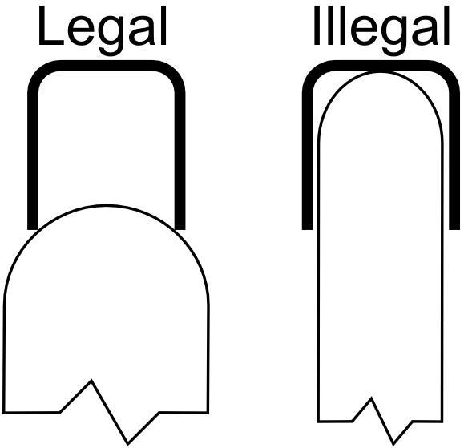

← All Events
Full official rules from the 2027 Division B Rules Manual
1. DESCRIPTION
Prior to the tournament, teams will construct, collect data on test flights, analyze and
optimize free flight Elastic Launched Gliders to achieve maximum time aloft.
A TEAM OF UP TO: 2 APPROXIMATE TIME: 10 minutes
EYE PROTECTION: B
2. EVENT PARAMETERS
a. Teams may bring up to 2 Gliders, Launch Handle(s), Flight Log(s), transportation box(es), tools, and
equipment.
b. Teams must bring one or more Measurement Boxes; transportation and measurement boxes may be the
same box.
c. The Event Supervisor will provide all other measurement tools and timing devices for scoring purposes.
d. Participants must wear Category B eye protection. Participants without proper eye protection
must be immediately informed and given a chance to obtain eye protection if time allows.
3. CONSTRUCTION PARAMETERS
a. Gliders may be constructed from published plans, commercial kits, competitor’s
designs, and/or other sources of design. Kits, if used, must not contain any pre-
glued joints or pre-covered surfaces.
b. The blunt nose of the fuselage, when inserted into a lip balm cap with inside
dimensions of ~1.57 cm deep and ~1.37 cm wide must not touch the end.
c. Any materials except Boron filaments may be used in construction of the Glider
and boxes.
d. The Glider, in its flight configuration, must fit fully into a team-provided
Measurement Box without a lid/cover.
i. The external dimensions of the Measurement Box must fit within a right, rectangular prism of 32.0
cm x 24.0 cm x 47.0 cm, including any external protuberances on the lidless box.
e. Total mass of the Glider, throughout the flight, must be more than 3.5 g and less than 10.0 g.
f. Launch Handle(s), excluding elastic, must be less than 1 m long in any orientation, be supported
completely by one student, and be of a safe configuration. The elastic used in the Launch Handle
must be non-metallic and must be in contact with the Glider throughout the launch. Elastic must
remain on the launch handle. If elastic leaves the Launch Handle, timing will end for that flight.

Legal vs. Illegal launch handle hook shapes — the hook must wrap around the outside of the glider fuselage (Legal), not inside (Illegal)
g. Participants must be able to answer questions on design, construction, and operation of the device per the
Building Policy found on www.soinc.org.
4. THE COMPETITION
a. Prior to day of Tournament
i. An indoor location will be selected by the Tournament officials.
ii. Tournament officials must announce the room dimensions (approximate length, width and ceiling
height) in advance of the competition.
iii. Tournament officials and the Event Supervisor are urged to minimize the effects of environmental
factors such as air currents.
b. Day of Tournament and prior to the first time slot:
i. The Event Supervisor will determine if:
(1) Multiple official flights may occur simultaneously.
(2) Practice flights may occur throughout the Competition, at the Event Supervisor’s discretion,
but must yield to any official flights.
(3) No practice flights will occur in the final half-hour of the event’s last period. (Teams that
declare a trim flight during their 6-minute Flight Period may still fly).
ii. Once participants enter the cordoned off competition area to trim, practice, or compete, they
must not receive outside materials (except as permitted by the Event Supervisor), assistance, or
communication. Only participants may handle Gliders until the event ends. Teams violating this
rule will be ranked below all other teams. Spectators will be in a separate area.
c. Self-Check Inspection Station (Optional)
i. Prior to check-in with the Event Supervisor, a self-check inspection station may be made available
to participants for checking their Measurement Box(es), and Gliders. Modifications may be made
prior to check-in.
ELASTIC LAUNCHED GLIDER B
d. Check-In
i. At check-in, participants will present their Gliders in Measurement Box(es), Launch Handle, and
Flight Logs for inspection immediately prior to their Flight Period.
(1) Teams from the same school can share the same Measurement Box.
ii. The Event Supervisor will verify the external dimensions of the Measurement Box(es) and that
the Glider fits fully inside the Measurement Box while in its flight configuration. Teams may not
manipulate the configuration of the Glider in order to fit into the box. The Glider’s overall dimensions
must not change after being removed from the box. This may be verified by showing that the Glider
slides into and out of the box without changing shape at the discretion of the Event Supervisor.
iii. The participants will remove the Glider from the box to allow for the mass to be measured. The
mass may be adjusted with ballast provided by the team to account for scale differences.
iv. The Launch Handle will be collected and returned to the team at the start of their 10-minute Flight
Period.
v. Only participants should handle the Gliders or Measurement Box(es).
e. Flight Period
i. The 6-minute Flight Period begins when the Event Supervisor returns the Launch Handle to the
team.
ii. Any flight beginning within the 6-minute Flight Period will be permitted to fly to completion.
iii. Participants may make adjustments/repairs/trim flights during their official Flight Period.
iv. Before each launch, participants must indicate to the Timers whether a flight is an official flight or
a trim flight. A flight is considered official if a team fails to notify the Timer(s) of the flight’s status.
v. Teams must not be given extra time to recover or repair their Glider.
vi. Teams may make up to a total of 5 official flights using 1 or 2 Gliders.
vii. Time aloft for each flight starts when the Glider leaves the participant’s hand and stops when any
part of the Glider touches the floor, the lifting surfaces no longer support the weight of the Glider
(such as the Glider landing on a girder or basketball hoop) or the Event Supervisors otherwise
determine the flight is over.
viii. Event Supervisors are strongly encouraged to utilize three (3) timers on all flights. The median flight
time in seconds to the precision of the device used is the official Time aloft.
ix. Participants must not steer the Glider during flights.
x. Students must be on the floor to launch from their hands. Artificial aids (other than the launch
handle) cannot be used to increase launch height.
xi. In the unlikely event of a collision with another Glider, a team may elect a re-flight. The decision to
re-fly may be made after the Glider lands. Timers are allowed to delay a launch to avoid a possible
collision. The 6-minute Flight Period does not apply to such a flight.
f. After the flight period ends, if requested by the Event Supervisor, the participants must demonstrate
that each Glider still fits fully inside the Measurement Box(es) in the flight configuration. Event
Supervisor may recheck the Launch Handle and the mass of the Glider.
g. The Event Supervisor will review with teams their data recorded at the end of their Event Time.
h. Teams filing an appeal must leave their Glider(s), Launch Handle, Measurement Box(es), and Flight
Log in the event area.
5. FLIGHT LOGS
a. Teams may present a Flight Log of recorded data for a BONUS. This data must include 4 or more
parameters (3 required and at least 1 additional) with data for 10 or more test flights prior to the
competition.
i. The required parameters are:
(1) Estimated/recorded peak flight height after launch
(2) Approximate length of elastic (relaxed)
(3) Flight Time
ii. The team must choose 1 additional data parameter beyond those required (e.g. launch pitch, launch
roll, elastic stretch, etc.)
b. All numeric data must include units which may be listed with the column headers of the log.
c. All logs will be returned to teams after inspection.
ELASTIC LAUNCHED GLIDER B (CONT.)
ELASTIC LAUNCHED GLIDER B (CONT.)
6. SCORING
a. Highest Final Score wins.
b. A team’s Final Score is the sum of their three longest Accumulated Flight Scores after multipliers are
applied.
c. Flight Score for each official flight = Flight Time x Bonuses (6.d).
d. Bonuses:
i. Teams with a complete Flight Log will receive a 20% bonus multiplier (x 1.2)
ii. Teams with a partial Flight Log will receive a 10% bonus multiplier (x 1.1).
iii. Teams without a Flight Log will receive no Flight Log bonus multiplier (x 1.0)
e. Example Score: For a flight time of 15.00 seconds with a complete Flight Log, the Flight Score
would be: 15.00 x 1.2 = 18.00 points.
f. Teams that violate rule(s) under “CONSTRUCTION PARAMETERS” or “COMPETITION” that do not
have a specific penalty will be ranked after all teams that do not violate those rules.
g. Ties will be broken by the longest non-scored official Flight Score.
7. DEFINITIONS
a. Elastic Launched Glider: A heavier-than-air aircraft that relies on lift generated by aerodynamic forces
acting on its wing(s) to remain aloft. It does not use a motor for propulsion; instead, it utilizes the release
of stored elastic energy to achieve its initial launch velocity.
b. Wing: A surface that creates lift by the flow of air across the surface.
c. Launch Handle: A handheld device composed of a rigid handle and an elastic loop used to launch the
glider. The handle and elastic are not considered part of the glider.
d. Event Supervisor (ES) is responsible for ensuring the event runs correctly. The ES can assign one or more
event helpers to perform various competition tasks.
e. Flight Configuration means the Glider is fully assembled and ready to fly. For example, no change in
chord, span, length, or total lifting area can occur after removing the Glider from its box and throughout
the flight itself.
f. Trim Flight: A test or practice flight, occurring during the flight period, that is not used for official
scoring.
g. Steering: Participants using something to control the direction of motion once the device is released.
(e.g. Balloons, poles, rods, air, etc.)
h. Ballast: A substance used to provide stability, balance, or control. (e.g. clay, tape, etc.)
This event is sponsored by the National Free Flight Society (NFFS).
Source: Science Olympiad 2027 Division B Rules Manual ©2027. For the most up-to-date rules, rule corrections, and clarifications visit
soinc.org.